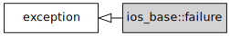
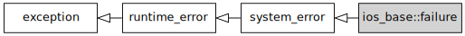

std::ios_base::failure
来自cppreference.com
| 定义于头文件 <ios>
|
||
| class failure; |
||
类 std::ios_base::failure 定义输入/输出库中的函数在失败时抛出的异常对象。
std::ios_base::failure 可以定义为 std::ios_base 的成员类，或拥有等价功能的另一个类的同义词（ typedef ）。 (C++17 起)
|
 继承图 |
(C++11 前) |
|
 继承图 |
(C++11 起) |
成员函数
| (构造函数) |
构造异常对象 (公开成员函数) |
std::ios_base::failure::failure
| explicit failure( const std::string& message ); |
(C++11 前) | |
| explicit failure( const std::string& message, const std::error_code& ec = std::io_errc::stream ); |
(C++11 起) | |
| explicit failure( const char* message, const std::error_code& ec = std::io_errc::stream ); |
(C++11 起) | |
以 message 为解释性字符串构造异常对象，能在之后用 what() 取得。
参数
| message | - | 解释性字符串 |
继承自 std::system_error
成员函数
| 返回错误码 ( std::system_error 的公开成员函数) | |
| [虚] |
返回解释性字符串 ( std::system_error 的虚公开成员函数) |
继承自 std::exception
成员函数
| [虚] |
析构该异常对象 ( std::exception 的虚公开成员函数) |
| [虚] |
返回解释性字符串 ( std::exception 的虚公开成员函数) |
示例
运行此代码
#include <iostream> #include <fstream> int main() { std::ifstream f("doesn't exist"); try { f.exceptions(f.failbit); } catch (const std::ios_base::failure& e) { std::cout << "Caught an ios_base::failure.\n" << "Explanatory string: " << e.what() << '\n' << "Error code: " << e.code() << '\n'; } }
输出：
Caught an ios_base::failure. Explanatory string: ios_base::clear: unspecified iostream_category error Error code: iostream:1
参阅
| (C++11) |
IO 流的错误码 (枚举) |